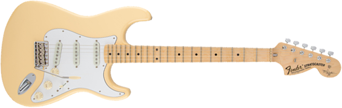
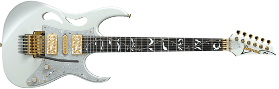

The new teaching methodology that the Ux Guitar Course offers guarantees faster and more efficient learning of the art of playing the guitar.
Immerse yourself in a world that has no turning back! The passion for music is what governs this course, which is why we carry out our work with great dedication to your learning.
Yngwie MalmsteenSteve vai
Yngwie Johann Malmsteen (born Lars Johan Yngve Lannerbäck, June 30, 1963) is a virtuoso guitarist / neo-classical metal artist from Sweden who achieved
widespread acclaim in the 1980s for his technical proficiency and fusion of classical music elements with heavy rock guitar.
Known for his virtuosity and style, Steve Vai has had a long and enviable career as a guitarist, singer, composer, and producer. The 1979 Berklee College of Music graduate, who began playing
with the legendary Frank Zappa and his band in 1980, has also found time through the years to educate and assist other musicians.
Styles
Hard Rock
Hard rock is characterized by an emphasis on bluesy guitar riffs, powerful vocals,
and heavy, thunderous drums. In order to understand what makes a subgenre like hard rock meaningful, we must understand the other genres that contrast it.
Heavy Metal
Heavy metal is traditionally characterized by loud distorted guitars, emphatic rhythms,
dense bass-and-drum sound and vigorous vocals. Heavy metal subgenres variously emphasize, alter or omit one or more of these attributes.
NeoClassic
Neoclassical guitar playing is a style that draws on classical music traditions while incorporating elements of rock and m
etal music. It often features fast, technically demanding playing, intricate arpeggios, and a focus on precision and virtuosity.
Classic Rock
In the United States, it comprises rock music ranging generally from the mid-1960s through the mid-1990s, primarily focusing on commercially successful blues rock and hard rock
popularized in the 1970s AOR format. The radio format became increasingly popular with the baby boomer demographic by the end of the 1990
Guitars


Fender stratocaster used by Yngwie Malmsteen
Ibanez used by Steve Vai
Common questions
What are the forms of payment ?
I need to pay anything to receive the certificate ?
Does The course have a fixed schedule ?
What is the minimum education or age required to make this course ?